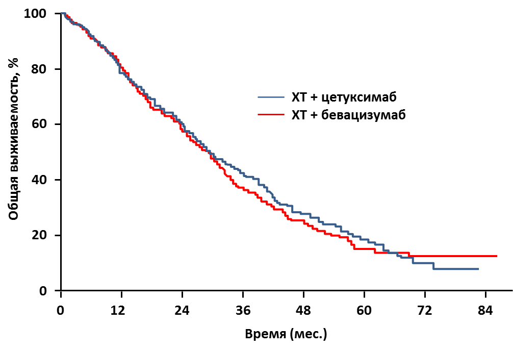

Бевацизумаб или цетуксимаб с FOLFOX или FOLFIRI одинаково увеличивают выживаемость при метастатическом колоректальном раке
Согласно результатам масштабного клинического исследования (КИ) III фазы, представленного на Пленарном заседании 50-й ежегодной конференции Американского общества клинической онкологии (ASCO) доктором Alan P. Venook из University of California, San Francisco, США, бевацизумаб и цетуксимаб в комбинации с режимами химиотерапии (ХТ) FOLFOX или FOLFIRI показали сходный эффект на результаты общей выживаемости (ОВ) у пациентов с метастатическим колоректальным раком (мКРР). Данное КИ установило новый стандарт медианы ОВ у этих пациентов – почти 29 месяцев.
КИ CALGB / SWOG 80405 началось в 2004 г., когда два исследуемых препарата были одобрены для лечения колоректального рака (бевацизумаб – в первой линии терапии, цетуксимаб – во второй или третьей линии). В исследование было включено 1137 пациентов, ранее не получавших лечения.
Пациенты с мКРР с диким типом KRAS (кодоны 12 и 13), получавшие FOLFOX (5-фторурацил, лейковорин, оксалиплатин) или FOLFIRI (5-фторурацил, лейковорин, иринотекан) в зависимости от мнения исследователя при включении в КИ, были рандомизированы в группы лечения бевацизумабом 5 мг/кг каждые 2 недели или цетуксимабом 400 мг/м2 однократно, затем 250 мг/м2 еженедельно. Лечение проводилось до прогрессирования заболевания, летального исхода, непереносимой токсичности или оперативного вмешательства; допускался перерыв в лечении до 4 нед. Основным оцениваемым показателем была ОВ.
Медиана наблюдения – 24 мес. Медиана возраста пациентов 59 лет, 61% мужчин, 39% женщин. В группу ХТ + бевацизумаб было включено 559 пациентов, в группу ХТ + цетуксимаб – 578. Режим FOLFOX получало 73% пациентов, режим FOLFIRI – 27%.
Медиана ОВ в группах была схожей: 29,0 мес. в группе ХТ + бевацизумаб и 29,9 мес. в группе ХТ + цетуксимаб (ОР 0,925; 95% ДИ [0,78-1,09]; р = 0,34) (рис. 1). Доктор A. P. Venook отметил, что полученные результаты ОВ значимо выше, чем это ожидалось при начале исследования 10 лет назад, когда при стандартном на то время лечении медиана ОВ больных мКРР составляла около 21 мес.
Выживаемость без прогрессирования была одинаковой и составила 10,8 мес. в группе ХТ + бевацизумаб и 10,4 мес. в группе ХТ + цетуксимаб (ОР 1,04; 95% ДИ [0,91-1,17]; р = 0,55).
У пациентов, получавших режим FOLFOX, медиана ОВ существенно не различалась: 30,1 мес. в группе ХТ + цетуксимаб и 26,9 мес. в группе ХТ + бевацизумаб (ОР 0,9; 95% ДИ [0,7-1,0]; р = 0,09).
При применении режима FOLFIRI наблюдалась тенденция к более высокой ОВ в группе бевуацизумаба (33,4 мес. при ХТ + бевацизумаб и 28,9 мес. при ХТ + цетуксимаб), однако это различие было статистически незначимым (ОР 1,2; 95% ДИ [0,9-1,6]; р = 0,28), что можно объяснить малым количеством пациентов в этой группе.
Важно заметить, что у 94 пациентов, которым после проведенного лечения была выполнена плановая операция, зарегистрировано отсутствие проявлений заболевания. Медиана наблюдения у этих больных составила 40 мес.
В данном КИ не наблюдалось новых нежелательных явлений (НЯ) для каждого препарата. Наиболее часто встречавшейся токсичностью ?3 ст. в группе бевацизумаба были артериальная гипертония (7%) и нарушения желудочно-кишечного тракта (2%), в группе цетуксимаба – акне подобная сыпь (7%) и диарея (11%).
Только 29,6% от всей когорты пациентов прекратили лечение из-за прогрессирования заболевания, 55,5% пациентов прекратили участие в КИ по причине НЯ, досрочного завершения участия или изменения терапии.
Рис. 1. Общая выживаемость больных мКРР, получавших ХТ + цетуксимаб или бевацизумаб в рамках исследования CALGB / SWOG 80405

Доктор A. P. Venook в своем докладе указал на факт, что значительное количество данных КИ еще рассматриваются, и анализ будет включать частоту ответа, длительность терапии, выполненные некоторым пациентам хирургические операции, а также подробное описание дальнейшего лечения прогрессирования заболевания. Один из предварительно запланированных анализов, анализ качества жизни пациентов, уже был выполнен и не показал существенных различий между группами пациентов.
Доктор Josep Tabernero, MD, PhD, из, Валь д'Эброн университетской больницы и Института онкологии Валь д’Эброн, Испания, был участником дискуссии, посвященной данной работе. Он подчеркнул, что дополнительные анализы данных этого КИ смогут показать, какие преимущества можно извлечь из каждого из использованных вариантов лечения. Он отметил, что в данном КИ дикий тип KRAS определялся на основе кодонов 12 и 13, но в последние годы выяснилось, что определение "расширенной панели" генов RAS может способствовать дальнейшему отбору пациентов. Кодоны 12 и 13 встречается приблизительно у 40% пациентов с мКРР, но определение других генетических маркеров может исключить большее количество больных и увеличить популяцию больных, подходящих для исследуемых вариантов лечения, до приблизительно 45%.
Доктор J.Tabernero также отметил, что в связи с ранее полученными противоречивыми данными о применении цетуксимаба и ХТ поднимался вопрос о целесообразности использования в некоторых институтах, включая Национальную раковую сеть США (NCCN), но результаты, представленные в данном исследовании, могут убедить NCCN пересмотреть место цетуксимаба при лечении мКРР.
Даже несмотря на то, что эта работа не ответила на первоначальный вопрос, какой вариант лечения лучше в этой ситуации для пациента, доктор J. Tabernero отметил, что медиана выживаемости пациентов с метастатическим КРР вышла на новый стандарт - около 30 месяцев.
ASCO 2014, LBA3